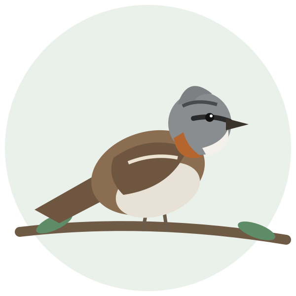

Salidas de avistamiento
Seis salidas programadas entre diciembre y febrero, en humedales, bosques de niebla y páramos cercanos a Bogotá. Filtra por nivel u ordénalas como prefieras.
Antes de elegir
¿Qué nivel es para ti?
| Nivel | Caminata | Horario típico | Ideal para |
|---|---|---|---|
| Principiante | Hasta 3 km, terreno plano o con pocas subidas. | Mañana, de 3 a 7 horas. | Primera salida y familias con niños desde los 8 años. |
| Intermedio | De 4 a 6 km, con subidas moderadas; en el páramo, a más de 3.000 m. | Medio día o día completo. | Personas con buena condición física o que ya hicieron una salida. |
| Avanzado | Hasta 8 km con pendientes y esperas largas en silencio. | Día completo, desde antes del amanecer. | Observadores con experiencia que buscan especies difíciles. |
Elige tu salida en tres pasos
- Revisa el nivel. Si es tu primera vez, empieza por una salida de nivel principiante.
- Compara horario y duración. El Humedal al amanecer termina antes de las 9:00 a. m.; el páramo ocupa todo el día.
- Abre la ficha. Allí encuentras el itinerario, qué llevar y el canto de una de las aves que buscaremos.
Lo que debes saber
- Los cupos se asignan en el orden de inscripción.
- Si llueve fuerte, la salida se reprograma sin costo.
- Las salidas con transporte parten del Parque de la 93.
Escucha
El canto que más vas a oír
El copetón (Zonotrichia capensis) canta en parques, jardines y bordes de bosque. Su silbido es lo primero que aprenden a reconocer quienes empiezan.
Grabación: MasBiomas, XC881658. Licencia: CC BY-NC-SA 4.0.
